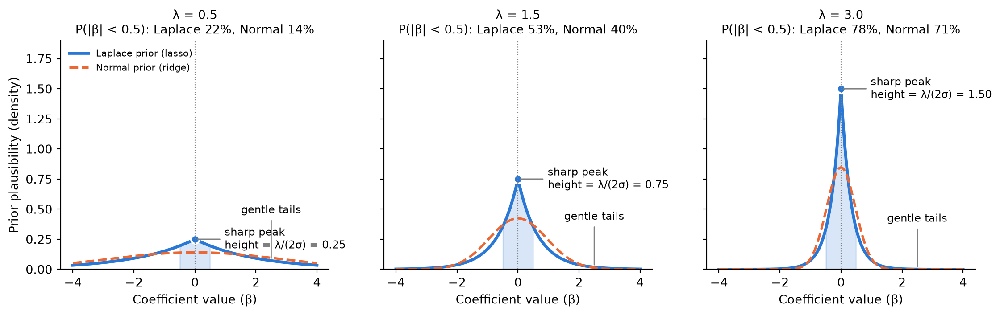

Show code
import numpy as np
import matplotlib.pyplot as plt
from math import erf, sqrt
sigma = 1.0 # noise standard deviation (set to 1 for the picture)
lams = [0.5, 1.5, 3.0] # small, medium, large lambda
beta = np.linspace(-4, 4, 1000) # possible coefficient values
blue, orange = "#2a78d6", "#eb6834"
fig, axes = plt.subplots(1, 3, figsize=(12, 3.8), sharey=True)
for ax, lam in zip(axes, lams):
# Laplace prior, equation (3) for a single coefficient
laplace = lam / (2 * sigma) * np.exp(-lam * np.abs(beta) / sigma)
# Normal prior with the same variance as the Laplace (variance = 2*sigma^2/lam^2)
sd = np.sqrt(2) * sigma / lam
normal = np.exp(-beta**2 / (2 * sd**2)) / (sd * np.sqrt(2 * np.pi))
# Shade the region |beta| < 0.5
near0 = np.abs(beta) < 0.5
ax.fill_between(beta[near0], laplace[near0], color=blue, alpha=0.18)
ax.plot(beta, laplace, color=blue, lw=2.5, label="Laplace prior (lasso)")
ax.plot(beta, normal, color=orange, lw=2, ls="--", label="Normal prior (ridge)")
# Peak marker and label
peak = lam / (2 * sigma)
ax.plot(0, peak, "o", color=blue, ms=7, mec="white", mew=1.5)
ax.annotate(f"sharp peak\nheight = λ/(2σ) = {peak:.2f}",
xy=(0, peak), xytext=(25, 0), textcoords="offset points",
fontsize=9, va="center", arrowprops=dict(arrowstyle="-", color="gray"))
# Tail label
ax.annotate("gentle tails", xy=(2.5, lam / (2 * sigma) * np.exp(-lam * 2.5 / sigma)),
xytext=(0, 40), textcoords="offset points", ha="center", fontsize=9,
arrowprops=dict(arrowstyle="-", color="gray"))
# Probability that |beta| < 0.5 under each prior
p_lap = 1 - np.exp(-lam * 0.5 / sigma)
p_norm = erf(0.5 / (sd * sqrt(2)))
ax.set_title(f"λ = {lam}\nP(|β| < 0.5): Laplace {p_lap:.0%}, Normal {p_norm:.0%}",
fontsize=10)
ax.set_xlabel("Coefficient value (β)")
ax.axvline(0, color="gray", lw=0.8, ls=":")
ax.spines[["top", "right"]].set_visible(False)
axes[0].set_ylabel("Prior plausibility (density)")
axes[0].legend(loc="upper left", fontsize=8, frameon=False)
axes[0].set_ylim(0, 1.9)
plt.tight_layout()
plt.show()